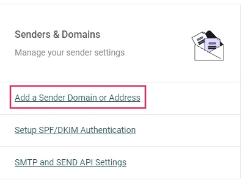
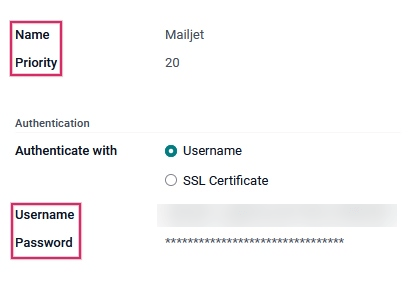

Mailjet API¶
Odoo is compatible with Mailjet’s API for mass mailing. Set up a dedicated mass mailing server through Mailjet by configuring settings in the Mailjet account and the Odoo database. In some circumstances, settings need to be configured on the custom domain’s DNS settings as well.
Set up in Mailjet¶
Create API credentials¶
To get started, sign in to the Mailjet Account Information page. Next, navigate to the Senders & Domains section and click on SMTP and SEND API Settings.

Then, copy the SMTP configuration settings onto a notepad. They can be found under the Configuration (SMTP only) section. The SMTP configuration settings include the server address, the security option needed (Use SSL/TLS), and the port number. The settings are needed to configure Mailjet in Odoo, which is covered in the last section.
Important
Odoo blocks port 25 on Odoo Online and Odoo.sh databases. See reference here.

Next, click on the button labeled Retrieve your API credentials to retrieve the Mailjet API credentials.
Then, click on the eye icon to reveal the API key. Copy this key to a notepad, as this serves as the Username in the Odoo configuration. Next, click on the Generate Secret Key button to generate the Secret Key. Copy this key to a notepad, as this serves as the Password in the Odoo configuration.
Add verified sender address(es)¶
The next step is to add a sender address or a domain to the Mailjet account settings so that the email address or domain is approved to send emails using Mailjet’s servers. First, navigate to the Mailjet Account Information page. Next, click on the Add a Sender Domain or Address link under the Senders & Domains section.
Determine if a sender’s email address or the entire domain needs to be added to the Mailjet settings. It may be easier to configure the domain as a whole if DNS access is available. Jump to the Add a domain section for steps on adding the domain.
Note
Either all email addresses of the Odoo database users who are sending emails using Mailjet’s servers need to be configured or the domain(s) of the users’ email addresses can be configured.
By default, the email address originally set up in the Mailjet account is added as a trusted sender. To add another email address, click on the button labeled Add a sender address. Then, add the email address that is configured to send from the custom domain.
At minimum the following email addresses should be set up in the provider and verified in Mailjet:
notifications@yourdomain.com
bounce@yourdomain.com
catchall@yourdomain.com
Note
Replace yourdomain with the custom domain for the Odoo database. If there isn’t one, then use
the mail.catchall.domain system parameter.
After that, fill out the Email Information form, making sure to select the appropriate email type: transactional email or mass emails. After completing the form, an activation email is sent to the email address and the trusted sender can be activated.
It is recommended to set up the SPF/DKIM/DMARC settings on the domain of the sender.
Important
If the database is not using a custom domain, then in order to verify the sender’s address, a temporary alias (of the three email addresses mentioned above) should be set up in Odoo CRM to create a lead. Then, the database is able to receive the verification email and verify the accounts.
Add a domain¶
By adding an entire domain to the Mailjet account, all the sender addresses related to that domain are automatically validated for sending emails using Mailjet servers. First, navigate to the Mailjet Account Information page. Next, click on Add a Sender Domain or Address link under the Senders & Domains section. Then, click on Add domain to add the custom domain.
Note
The domain needs to be added to the Mailjet account and then validated through the DNS.
After that, fill out the Add a new Domain page on Mailjet and click Continue.
After adding the domain, a validation page will populate. Unless the Odoo database is on-premise (in which case, choose Option 1), choose Option 2: Create a DNS Record. Copy the TXT record information to a notepad and then navigate to the domain’s DNS provider to complete validation.

Setup in the domain’s DNS¶
After getting the TXT record information from the Mailjet account, add a TXT record to the domain’s DNS. This process varies depending on the DNS provider. Consult the provider for specific configuration processes. The TXT record information consists of the Host and Value. Paste these into the corresponding fields in the TXT record.
Return to Mailjet account information¶
After adding the TXT record to the domain’s DNS, navigate back to the Mailjet account. Then, navigate to , click the gear icon next to Domain, and select Validate.
This action can also be done by going to the Sender domains & addresses page on the Mailjet account information and clicking on Manage.
Next, click Check Now to validate the TXT record that was added on the domain. A success screen will appear if the domain is configured correctly.

After successfully setting up the domain, there is an option to Authenticate this domain (SPF/DKIM). This button populates SPF & DKIM provider.
Set up in Odoo¶
To complete the setup, navigate to the Odoo database and go to the Settings. With Developer mode (debug mode) turned on, go to the . Then, create a new outgoing server configuration by clicking on the Create button.
Next, input the SMTP server (in-v3.mailjet.com), port number (587 or 465), and Security
(SSL/TLS) that was copied earlier from the Mailjet account. They can also be found here. It is recommended to use SSL/TLS even though Mailjet may not require it.
For the Username, input the API KEY. For the Password, input the SECRET KEY that was copied from the Mailjet account to the notepad earlier. These settings can be found on .
Then, if the Mailjet server is used for mass emailing, set the Priority value higher than that of any transactional email server(s). Finally, save the settings and Test the Connection.
Important
In order for the notifications feature to work using Mailjet, there are three settings that need to be set in Odoo.
The From Filter needs to be set on the server configuration. It is recommended to set it as a domain and not a full email address. It should match the domain in the two proceeding steps. More information can be referenced here.
The mail.default.from system parameter must have the value
notifications@yourdomain.com.The mail.default.from_filter system parameter must have the value
yourdomain.com. Replaceyourdomainwith the custom domain for the Odoo database. If there isn’t one, then use the mail.catchall.domain system parameter.
For more information see Using a default email address.
The System Parameters can be accessed by activating the developer mode.
Once the setup is complete, the Odoo database is ready to use the Mailjet email server for mass mailing or transactional emails!